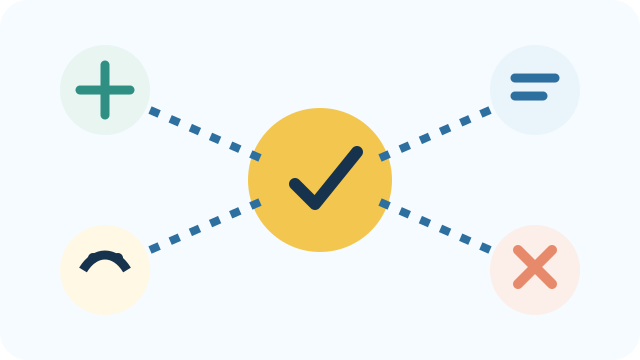
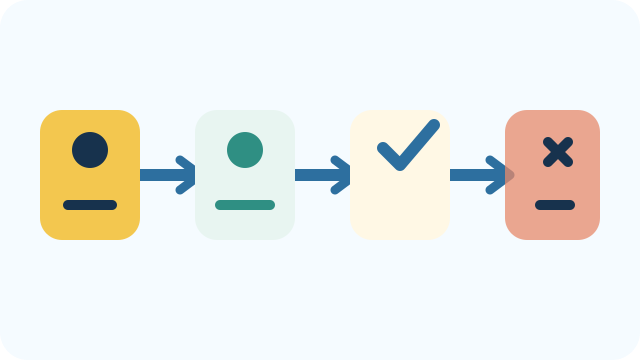
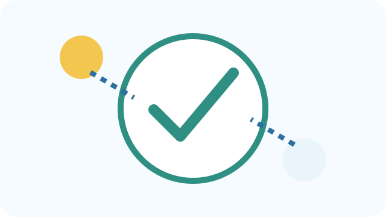
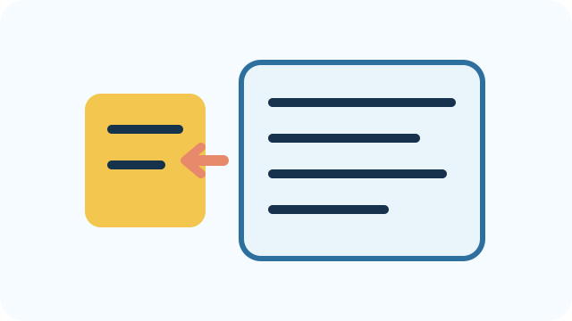
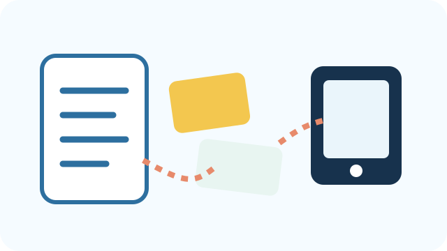
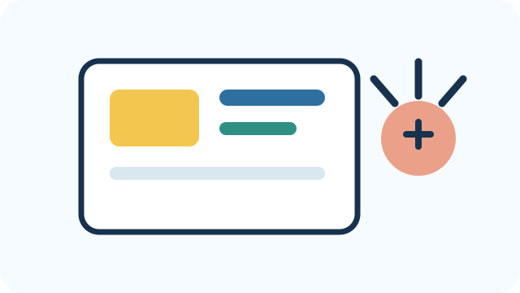

Prepare, then facilitate
Start by experiencing a short version of the student thinking. When you are ready to teach, switch to the Student meeting view and choose one or two 45-minute meetings.

Try the student activity
Try task breakdown before the session
Try narrowing a broad learning problem yourself. The point is to feel why “I don’t understand this subject” is too large to design for.
A learner gets word problems wrong but calculates correctly once someone sets up the equation. Which focus is most useful?
Choose one, then check what you notice.
Choose an everyday task you know well and write its first four meaningful steps. Notice how much hidden knowledge you normally skip when you already know the task.

Why this matters
What was difficult or tempting?
- Where did you want to jump to a solution?
- What information did you realize you were missing?
- What might a student need modeled rather than merely explained?
The idea behind the activity
Task decomposition makes hidden steps visible. A breakdown is your best evidence-based hypothesis about where the process changes—not a label placed on the learner. Access barriers can also look like learning problems, so check those first.

Plan your support
Prepare one move for your students
Pick one example task you can decompose aloud. Be ready to say, “We are looking for the first place the process changes, not blaming the learner.”

Choose the meeting length
Choose the student meeting length
Use one 45-minute meeting as the minimum viable path, or two 45-minute meetings when you have time for more practice, discussion, and revision.
Showing the 1 × 45-minute Session Plan.
Know the purpose
Your goal
Students will build a step-by-step Task Map, identify what the learner can already do, locate a likely point of breakdown, set a clear learning objective and observable evidence of success, and finish with a focused problem statement small enough to design and test.
Students are designing something that may help themselves or someone else learn. At the same time, they should be able to explain what this stage taught them about human learning and about the useful roles and limits of AI.
Why it matters
A broad statement such as “I struggle with algebra” or “students do not understand graphs” does not tell a design team what to change. Define asks students to rewind the task until they can see where performance changes.
This is also where students begin connecting their observations to learning science. The goal is not to decide the answer for a person; it is to develop a testable explanation of a learning breakdown that can be revised when new evidence appears.

Get ready
Before you meet
- Review the team’s Empathize artifacts and confirm that they contain observations, not only a product idea.
- Choose one privacy-safe learning task you can decompose into several meaningful steps in front of students.
- Think about likely prerequisites, representations, or access barriers you may need to help students notice without choosing the bottleneck for them.
- Prepare one short privacy-safe task, observation, or work sample students can use to check a bottleneck hypothesis with direct evidence.
Core materials
Empathy notes; privacy-safe sample task or learner work; Student Define page; Learning Breakdown Mapper; index cards/sticky notes for optional physical task mapping; access to an facilitator-approved AI tool only if students use the optional Task Breakdown Helper.
Safety and access to plan for Define
- Use privacy-safe examples and learner work; remove names and identifying details before students analyze them.
- Ask explicitly whether the apparent difficulty could come from language, directions, visual layout, device demands, timing, or another access barrier rather than the target learning itself.
- Let students map a task with cards, speech, drawing, or a digital form; the representation should not become a barrier to the analysis.
- Treat direct observations as evidence about this situation, not as labels about the learner’s ability.

Run the session
Session Plan
Choose one complete path. The 1 × 45-minute version contains the essential activities. The 2 × 45-minute version adds time to practice, investigate, and revise without requiring one continuous 90-minute block.
Session Plan
Open each step as you reach it. The timing below is the complete plan for the version you selected.
1Reopen the Empathy Map0–5 minutes
How to do it
- Open the student’s Empathy Map from Stage 1.
- Ask which parts came directly from the interview and which parts are still questions.
- Choose one real STEM task to map. Do not ask students to explain the cause yet.
2Map the learning task in sequence5–17 minutes
How to do it
- Model a familiar task in 4–6 steps. For each step, name what the learner does and what knowledge, representation, or decision the step requires.
- Open the Learning Breakdown Mapper. Students will see one task step at a time and a visual map of the whole sequence. Have them mark each step as working, needing help, where it gets hard, or still uncertain. Students add one task step at a time and mark each step as working, needs help, gets hard, or not sure.
- Require a short piece of evidence at important steps: what did the learner say, do, write, or need help with?
- If the team cannot see the hidden steps, use the optional Task Breakdown Helper prompt. Treat the AI response as a draft to critique, then revise the Task Map yourselves.
- Look for the earliest meaningful change in performance rather than automatically choosing the final visible error.
Task decomposition
1-minute explainer: Complex performance depends on smaller knowledge, decisions, representations, and actions. The last wrong answer may occur after the real breakdown began.
Try saying: “We are going to rewind the task until we find the first step that changes.”
Example: A student gets slope wrong. The issue may be the formula—or earlier, reading axis intervals, identifying rise/run, or interpreting direction.
Watch for: Do not automatically treat the final visible error as the cause.
Use when students need more supportBuild the task map physically
Use this when: Students struggle to break a complex task into steps or write long explanations.
How to run it
- Write each task step on a separate index card.
- Ask students to arrange the cards from first to last and add missing steps.
- Under each card, place a green note for “can do,” yellow for “sometimes/with help,” or red for “breakdown.”
- Add a second small note naming the knowledge or representation needed at the first yellow/red step.
- Transfer the resulting sequence into the Learning Breakdown Mapper.
Materials: index cards, three colors of sticky notes, one worked example, marker.
You are ready to continue when: the team can point to the first meaningful change in performance and describe what may be needed there.
Use when students are ready for more challengeMap a branching or non-linear task
Use this when: The team’s task involves decisions rather than one simple sequence.
How to run it
- Identify the major decision points in the task.
- Draw at least two branches showing what happens after different learner choices.
- Mark which branch is supported by current evidence and which is hypothetical.
- Find the earliest decision where novice and proficient performance differ.
- Use a credible source or additional work sample to test one assumption about that decision.
Materials: large paper/whiteboard, branch arrows, evidence notes, optional disciplinary source.
You are ready to continue when: students can explain how different pathways through the task change their bottleneck hypothesis.
3Name the first likely breakdown17–27 minutes
How to do it
- Ask: What can the learner already do without help?
- Find the earliest step where the evidence changes from success to confusion, guessing, or dependence on help.
- Write at least one alternative explanation for the same observation.
- Ask what evidence would distinguish the explanations.
Optional extensionCompare two bottleneck hypotheses
Use this when: The team has good evidence but two explanations still fit.
How to run it
- Write both hypotheses in parallel.
- For each, list evidence that supports it and evidence that would weaken it.
- Design one quick observation, work-sample check, or question that could distinguish them.
- Collect the new evidence if feasible, then revise the Task Map.
- Keep both explanations if the evidence remains ambiguous.
Materials: two-column hypothesis sheet, existing empathy evidence, one additional task or work sample.
You are ready to continue when: students can explain why one hypothesis is currently stronger—or why the evidence is still inconclusive.
4Check prerequisites, access, and direct evidence27–35 minutes
How to do it
- Look at the directions, language, visual layout, device demands, timing, and interaction format.
- Ask whether any of these could be preventing the learner from showing what they know.
- If access is contributing, decide whether the design should remove the barrier, support the learning process, or both.
Access versus understanding
1-minute explainer: Performance can be limited by how information or interaction is presented rather than by the target knowledge itself.
Try saying: “Before we teach something new, make sure the learner can access the instructions, representation, language, and interaction.”
Example: A learner may understand a graph concept but struggle because labels are tiny or directions are linguistically dense.
Watch for: Do not interpret an access barrier as low ability, low motivation, or a learning deficit.
Use direct evidence before outside research
1-minute explainer: For the core League experience, interviews, observations, work samples, and a short task can be enough to test whether your proposed breakdown fits. Outside research is optional, not required.
Say it this way: “We need enough evidence to improve our explanation—not a research paper.”
Example: If you think the learner confuses graph points with intervals, ask them to work one short example and explain their counting.
Watch for: Do not require students to search for scholarly sources just to move forward.
5Check scope and write the focused problem35–42 minutes
How to do it
- Run the mapper’s readiness check.
- If the result is Too broad, identify which part of the task or learner group can be narrowed.
- If it is Almost there, make the targeted revisions before proceeding.
- If it is Ready to design, complete: “The learner can already… The breakdown seems to happen when… Our evidence is… Therefore our project will focus on…”
- Name one observable change that would count as improvement.
- Write: “By the end of using our learning tool, the learner should be able to…” and complete it with one observable learning action.
- Write: “We will know because…” and name the task, explanation, decision, or performance that would count as evidence of learning.
6Facilitator checkpoint42–45 minutes
How to do it
- Ask the team to complete three sentences: “The learner can already…,” “The breakdown seems to happen when…,” and “Our project will focus on…”.
- Ask what direct evidence supports that explanation.
- If the explanation is still broad or based mostly on assumption, send the team back one step.
Session Plan
Open each step as you reach it. The timing below is the complete plan for the version you selected.
1Reopen the Empathy Map0–5 minutes
How to do it
- Open the student’s Empathy Map from Stage 1.
- Ask which parts came directly from the interview and which parts are still questions.
- Choose one real STEM task to map. Do not ask students to explain the cause yet.
2Model task decomposition together5–15 minutes
How to do it
- Choose a familiar learning task that is not the team’s project.
- Ask what the learner does first, next, and after that.
- At each step, ask what knowledge or decision is required.
- Show how a final wrong answer may originate from an earlier step.
Task decomposition
1-minute explainer: A complex performance is made of smaller knowledge, decisions, and actions. The visible error may occur after the real breakdown.
Say it this way: “Let’s rewind the task until we find the first place the learner’s process changes.”
Example: A wrong slope answer may begin with miscounting intervals before the division step.
Watch for: Do not make the map so granular that students lose the overall learning goal.
3Build the team’s task map15–35 minutes
How to do it
- Model a familiar task in 4–6 steps. Reveal one step at a time so students notice how much hidden thinking sits inside an apparently simple task. Say what the learner does at each step and what knowledge, representation, or decision is needed.
- Ask students to map their own task from the beginning rather than starting with the final error.
- Have them mark where the learner succeeds independently, succeeds with help, becomes inconsistent, or gets stuck.
- Encourage revision of earlier steps if students discover a missing prerequisite.
Task decomposition
1-minute explainer: Complex performance depends on smaller knowledge, decisions, representations, and actions. The last wrong answer may occur after the real breakdown began.
Try saying: “We are going to rewind the task until we find the first step that changes.”
Example: A student gets slope wrong. The issue may be the formula—or earlier, reading axis intervals, identifying rise/run, or interpreting direction.
Watch for: Do not automatically treat the final visible error as the cause.
Use when students need more supportBuild the task map physically
Use this when: Students struggle to break a complex task into steps or write long explanations.
How to run it
- Write each task step on a separate index card.
- Ask students to arrange the cards from first to last and add missing steps.
- Under each card, place a green note for “can do,” yellow for “sometimes/with help,” or red for “breakdown.”
- Add a second small note naming the knowledge or representation needed at the first yellow/red step.
- Transfer the resulting sequence into the Learning Breakdown Mapper.
Materials: index cards, three colors of sticky notes, one worked example, marker.
You are ready to continue when: the team can point to the first meaningful change in performance and describe what may be needed there.
Use when students are ready for more challengeMap a branching or non-linear task
Use this when: The team’s task involves decisions rather than one simple sequence.
How to run it
- Identify the major decision points in the task.
- Draw at least two branches showing what happens after different learner choices.
- Mark which branch is supported by current evidence and which is hypothetical.
- Find the earliest decision where novice and proficient performance differ.
- Use a credible source or additional work sample to test one assumption about that decision.
Materials: large paper/whiteboard, branch arrows, evidence notes, optional disciplinary source.
You are ready to continue when: students can explain how different pathways through the task change their bottleneck hypothesis.
4Compare two bottleneck hypotheses35–45 minutes
How to do it
- Name the first likely breakdown.
- Name one plausible alternative explanation.
- For each, list what you would expect to see if it were true.
- Choose one quick observation, work sample, or mini-task that could distinguish them.
Optional extensionCompare two bottleneck hypotheses
Use this when: The team has good evidence but two explanations still fit.
How to run it
- Write both hypotheses in parallel.
- For each, list evidence that supports it and evidence that would weaken it.
- Design one quick observation, work-sample check, or question that could distinguish them.
- Collect the new evidence if feasible, then revise the Task Map.
- Keep both explanations if the evidence remains ambiguous.
Materials: two-column hypothesis sheet, existing empathy evidence, one additional task or work sample.
You are ready to continue when: students can explain why one hypothesis is currently stronger—or why the evidence is still inconclusive.
1Check prerequisites and access0–10 minutes
How to do it
- Look at the directions, language, visual layout, device demands, timing, and interaction format.
- Ask whether any of these could be preventing the learner from showing what they know.
- If access is contributing, decide whether the design should remove the barrier, support the learning process, or both.
Access versus understanding
1-minute explainer: Performance can be limited by how information or interaction is presented rather than by the target knowledge itself.
Try saying: “Before we teach something new, make sure the learner can access the instructions, representation, language, and interaction.”
Example: A learner may understand a graph concept but struggle because labels are tiny or directions are linguistically dense.
Watch for: Do not interpret an access barrier as low ability, low motivation, or a learning deficit.
2Run a quick direct-evidence check10–20 minutes
How to do it
- Choose one tiny task related to the suspected bottleneck.
- Ask the learner to try it and explain their thinking, or inspect an existing work sample.
- Record what the learner does—not what the team expected them to do.
- Revise the bottleneck explanation if the evidence does not fit.
Use direct evidence before outside research
1-minute explainer: For the core League experience, interviews, observations, work samples, and a short task can be enough to test whether your proposed breakdown fits. Outside research is optional, not required.
Say it this way: “We need enough evidence to improve our explanation—not a research paper.”
Example: If you think the learner confuses graph points with intervals, ask them to work one short example and explain their counting.
Watch for: Do not require students to search for scholarly sources just to move forward.
3Check whether the problem is small enough20–30 minutes
How to do it
- Run the mapper’s readiness check.
- If the result is Too broad, identify which part of the task or learner group can be narrowed.
- If it is Almost there, make the targeted revisions before proceeding.
- If it is Ready to design, complete: “The learner can already… The breakdown seems to happen when… Our evidence is… Therefore our project will focus on…”
- Name one observable change that would count as improvement.
4Write the focused problem and success evidence30–40 minutes
How to do it
- Complete: “The learner can already…”
- Complete: “The breakdown seems to happen when…”
- Complete: “Therefore our project will focus on…”
- Name one observable behavior that would show progress.
- Write: “By the end of using our learning tool, the learner should be able to…” and complete it with one observable learning action.
- Write: “We will know because…” and name the task, explanation, decision, or performance that would count as evidence of learning.
5Facilitator checkpoint40–45 minutes
How to do it
- Ask the team to explain the task map without reading the form.
- Ask which observation most changed their thinking.
- Check that the project targets one learning process rather than a whole subject or unit.
Check what students have
What students should have when they finish
- A step-by-step Task Map showing what the learner is trying to do, what already works, and where difficulty begins.
- A focused learning problem stated as the team’s best current hypothesis—not a final answer.
- A STEM connection for the project.
- A learning objective: what the learner should be able to do differently.
- Observable evidence that would show improvement.

Before the next meeting
Keep the project moving without adding another full session
Use only what fits your students and schedule. These tasks can be completed independently, with a teammate, or during a short facilitator check-in.
- Have students finish or revise the Learning Breakdown Map if the 45-minute session ended before the facilitator checkpoint.
- Ask for one additional attempt, work sample, or observation when the proposed breakdown is still uncertain.
- Carry the focused challenge and observable success target into Ideate.
Next meeting: begin by asking students what they tried, what changed, and what they still need help figuring out.